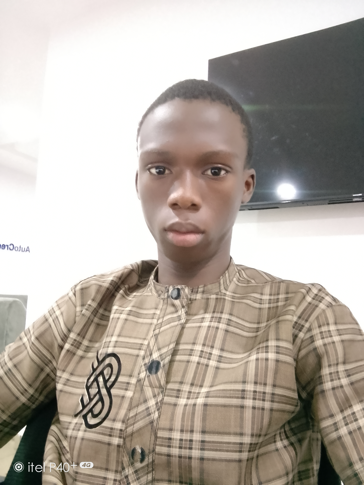

About Me 🙃

My name is Rabiu Ahmad, I am an aspiring male software developer at Alt_School Africa. I am a cool, respectful,determined and passionate developer who wants to learn programming to solve problems affecting the society. I am a 17 yrsold undergraduate wishing to study software engineering at the Federal University of Technology Akure.
Why I joined Alt_School Africa 🤔
First what is altSchool about?, Alt_School Africa is a digital based learning platform, where people acquire digital skills which includes software engineering. Now that we know what altSchool is about, let's talk about why I joined?, I joined altSchool to gained the needed knowledge to become good and confident software developer that can solve problems people are facing in the society concerning technology. In today world, there are thousands of tech problems that are yet to be solved but are still waiting for smart developers and innovators that will solve them, and amongst these developers is ME whose is ready to solve world problems through altSchool.
My goal for Alt_School🙂
Here is a list of the things I plan for Alt_School
- I plan to fight it through to the last semester and graduate.
- I plan to be the best outgoing student of school of engineering tinyunka 2023.
- I plan to graduate as a great developer ready to be hired.
- I plan to solve one of the problems altSchool is facing after learning.
- I plan to tell people about my experience at altSchool Africa.